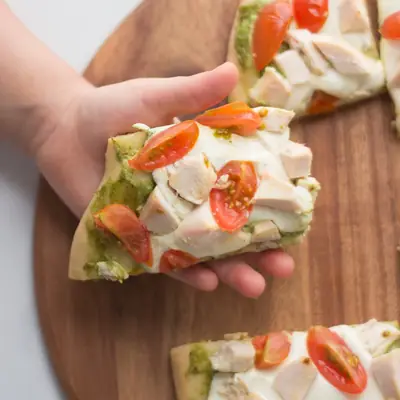

Chicken pesto flatbread

Ingredients
- 1 flatbread crust
- 1/4 cup pesto, store-bought or homemade
- 1 cup diced chicken
- 1/2 cup cherry tomatoes, quartered
- 2 ouncecs fresh mozzarella cheese , sliced
Steps
- Preheat oven to 425° Fahrenheit.
- Place flatbread on a sheet pan and spread pesto on top.
- Top with mozzarella, tomatoes, and chicken.
- Bake for 10-12 minutes or until the crust is crispy and cheese is melted.
Recipe by Min Kwon · Kidfriendly Meals, from MJ and Hungryman. Saved here for personal use; the original has the full notes, tips and photos. Open original